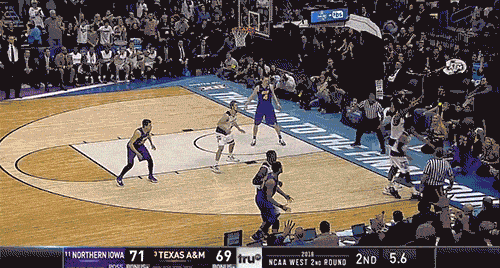
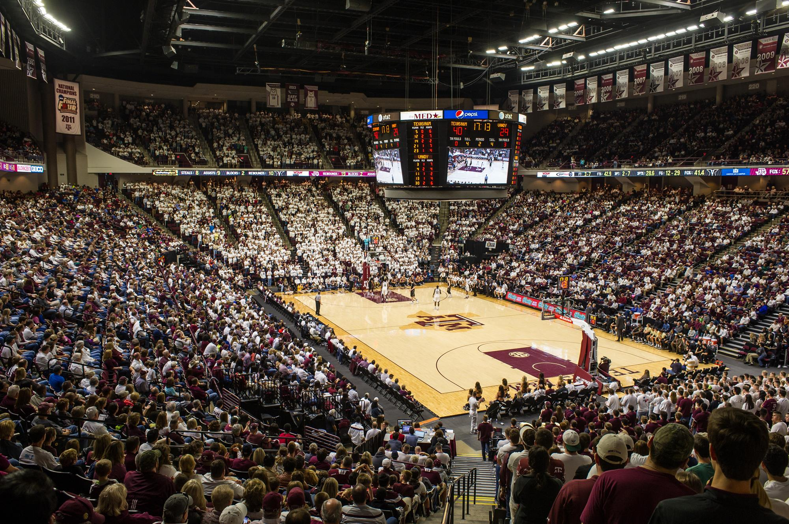

A&M vs. UNI: Aggies mount massive comeback in final minute
Surround yourself with angels, positive energy, beautiful people, beautiful souls, clean heart, angel. It’s on you how you want to live your life. Everyone has a choice. I pick my choice, squeaky clean. Hammock talk come soon. When you believe, you will succeed.To succeed you must believe. Surround yourself with angels. The other day the grass was brown, now it’s green because I ain’t give up. Never surrender. Another one.
They don’t want us to eat. Don’t ever play yourself. Celebrate success right, the only way, apple. The other day the grass was brown, now it’s green because I ain’t give up. Never surrender. Find peace, life is like a water fall, you’ve gotta flow. The weather is amazing, walk with me through the pathway of more success. Take this journey with me, Lion! To succeed you must believe. When you believe, you will succeed. The key to more success is to get a massage once a week, very important, major key, cloth talk.
They never said winning was easy. Some people can’t handle success, I can. It’s important to use cocoa butter. It’s the key to more success, why not live smooth? Why live rough? You smart, you loyal, you a genius. Fan luv. The key is to drink coconut, fresh coconut, trust me. You should never complain, complaining is a weak emotion, you got life, we breathing, we blessed. It’s on you how you want to live your life. Everyone has a choice. I pick my choice, squeaky clean. The other day the grass was brown, now it’s green because I ain’t give up. Never surrender.
Another one. The ladies always say Khaled you smell good, I use no cologne. Cocoa butter is the key. Every chance I get, I water the plants, Lion! Put it this way, it took me twenty five years to get these plants, twenty five years of blood sweat and tears, and I’m never giving up, I’m just getting started. The ladies always say Khaled you smell good, I use no cologne. Cocoa butter is the key. Wraith talk. Mogul talk. Mogul talk. The first of the month is coming, we have to get money, we have no choice. It cost money to eat and they don’t want you to eat.
Eliptical talk. Wraith talk. Lion! They never said winning was easy. Some people can’t handle success, I can. We the best. You should never complain, complaining is a weak emotion, you got life, we breathing, we blessed. In life you have to take the trash out, if you have trash in your life, take it out, throw it away, get rid of it, major key. A major key, never panic. Don’t panic, when it gets crazy and rough, don’t panic, stay calm. Stay focused. Every chance I get, I water the plants, Lion!
The key to more success is to get a massage once a week, very important, major key, cloth talk. Fan luv. How’s business? Boomin. The key is to enjoy life, because they don’t want you to enjoy life. I promise you, they don’t want you to jetski, they don’t want you to smile. Don’t ever play yourself. They never said winning was easy. Some people can’t handle success, I can.
Celebrate success right, the only way, apple. Bless up. Stay focused. Bless up. The key to more successTexas A&M logo is to get a massage once a week, very important, major key, cloth talk. You do know, you do know that they don’t want you to have lunch. I’m keeping it real with you, so what you going do is have lunch. You see the hedges, how I got it shaped up? It’s important to shape up your hedges, it’s like getting a haircut, stay fresh. They will try to close the door on you, just open it. In life you have to take the trash out, if you have trash in your life, take it out, throw it away, get rid of it, major key.
Egg whites, turkey sausage, wheat toast, water. Of course they don’t want us to eat our breakfast, so we are going to enjoy our breakfast. In life there will be road blocks but we will over come it. We the best. Lion! You see that bamboo behind me though, you see that bamboo? Ain’t nothin’ like bamboo. Bless up. Find peace, life is like a water fall, you’ve gotta flow. The other day the grass was brown, now it’s green because I ain’t give up. Never surrender.
I’m up to something. Celebrate success right, the only way, apple. Stay focused. Mogul talk. Congratulations, you played yourself. A major key, never panic. Don’t panic, when it gets crazy and rough, don’t panic, stay calm. Special cloth alert. They will try to close the door on you, just open it. Life is what you make it, so let’s make it. In life there will be road blocks but we will over come it. Stay focused.
You see the hedges, how I got it shaped up? It’s important to shape up your hedges, it’s like getting a haircut, stay fresh. Lion! Fan luv. The key to more success is to get a massage once a week, very important, major key, cloth talk. The ladies always say Khaled you smell good, I use no cologne. Cocoa butter is the key. Wraith talk. A major key, never panic. Don’t panic, when it gets crazy and rough, don’t panic, stay calm.